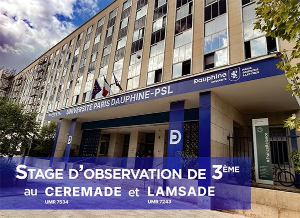

🎓 Stage d'observation de 3ème
🏛️ Université Paris Dauphine-PSL · 🔬 CEREMADE (mathématiques) et LAMSADE (informatique)
Les laboratoires de recherche en informatique et en mathématiques de l'université Paris Dauphine-PSL proposent d'accueillir des collégiennes et des collégiens pour leur stage d'observation de 3ème, la semaine du 1er au 5 février 2027.
Plus d'informations et détails sur les démarches :
Voir les démarches